Ketul Shah

Hello!
I'm a final year PhD candidate at Johns Hopkins University in the department of Electrical and Computer Engineering advised by Prof. Rama Chellappa. My broad research interests lie at the intersection of machine learning, computer vision and computer graphics. My current work is on robust action recognition leveraging videos from multiple viewpoints and using synthetic data.
Previously, I obtained an MS in ECE from University of Maryland, College Park. In previous life, I received a Dual Degree (B.Tech + M.Tech) in Electrical Engineering from Indian Institute of Technology Madras, where I worked with Prof. Kaushik Mitra at the Computational Imaging Lab.
News
- 08/2025: Patent filed in collaboration with Adobe.
- 06/2025: Started an internship at AWS Agentic AI with Mayank Bansal.
- 05/2025: Diffuse2Adapt accepted for Oral Presentation at ICIP 2025.
- 12/2024: AeroGen accepted at FG 2025.
- 05/2024: Started internship at Adobe Research with Fabian Caba Heilbron and Pankaj Nathani.
- 02/2024: UNITE accepted at CVPR 2024.
- 06/2023: Started internship at Amazon Just Walk Out with Robert, Jie, Marian, Peng & Mayank.
- 02/2023: HaLP accepted at CVPR 2023.
- 01/2023: RoCoG accepted at ICRA 2023.
- 10/2022: ViewCon accepted at WACV 2023.
- 09/2022: FeLMi accepted at NeurIPS 2022.
- 06/2021: Started internship at Amazon Rekognition with Kaustav, Arthur, Hao, Joe.
Research Work
| 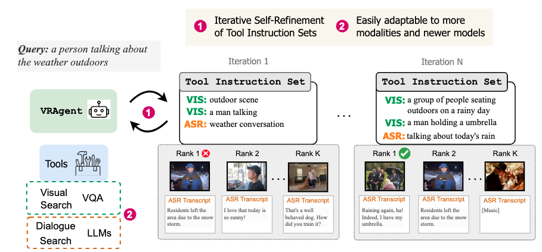 |
VRAgent: Self-Refining Agent for Zero-Shot Multimodal Video Retrieval
Under submission
Agentic retrieval framwork for multimodal video retrieval by decomposing the user query into tool-instruction set and iteratively self-refining it. Introduces two multimodal video retrieval benchmarks.
|
| 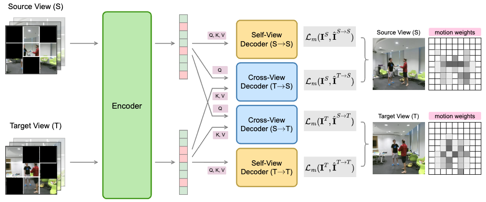 |
MV2MAE: Self-Supervised Video Pre-Training with Motion-Aware Multi-View Masked Autoencoders
Under submission
Video SSL using multi-view video data using cross-view reconstruction and motion-aware masking.
Ketul Shah,
Robert Crandall,
Jie Xu,
Peng Zhou,
Vipin Pillai,
Marian George,
Mayank Bansal,
Rama Chellappa.
|
| 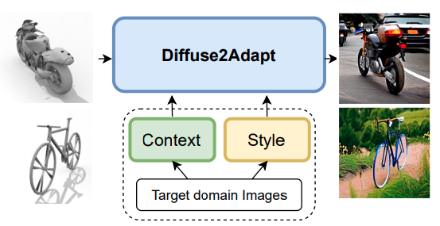 |
Diffuse2Adapt: Controlled Diffusion for Synthetic-to-Real Domain Adaptation
ICIP 2025 (Oral Presentation)
UDA leveraging controlled diffusion models to translate the source images to the target domain, while incorporating context and style of target domain.
|
| 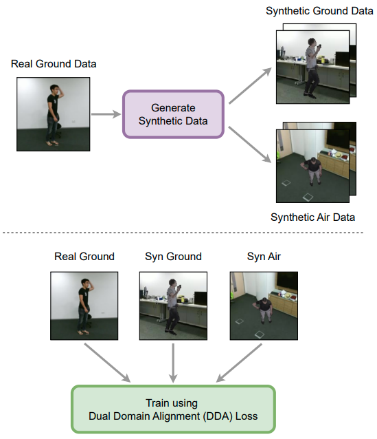 |
AeroGen: Ground-to-Air Generalization for Action Recognition
FG 2025
Synthesize diverse aerial and ground data using 3D human mesh extraction and rendering.
Dual Domain Adaptation loss is proposed to align synthetic-real and ground-air domains. |
| 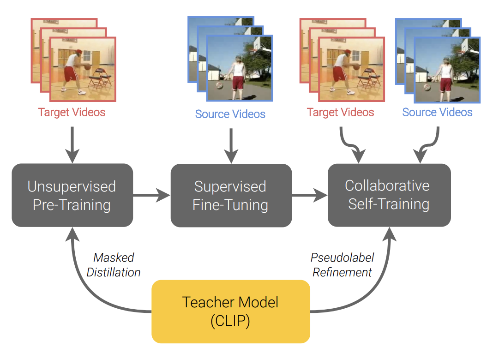 |
Unsupervised Video Domain Adaptation with Masked Pre-Training
and Collaborative Self-Training CVPR 2024
Video unsupervised domain adaptation (UDA) by leveraging CLIP for masked distillation and self-training on target domain data.
|
| 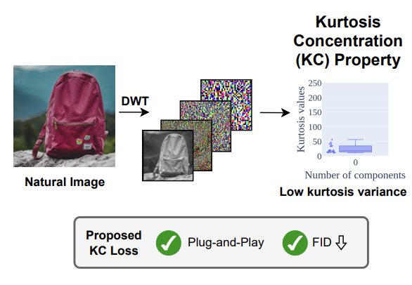 |
DiffNat: Exploiting the Kurtosis Concentration Property for Image quality improvement
TMLR 2025
Proposed a general "naturnaless" preserving loss based on projected kurtosis concentration property of natural images.
|
| 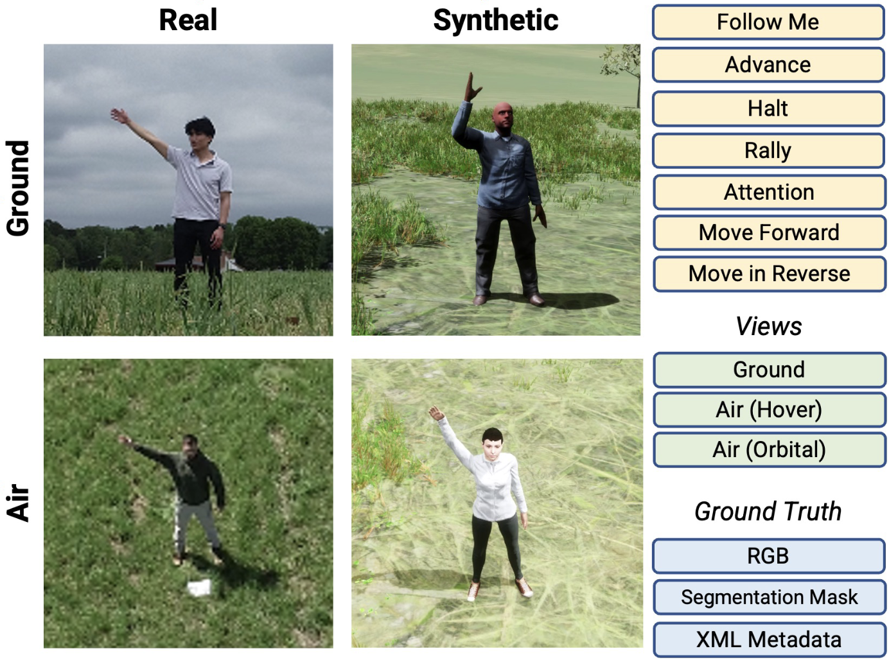 |
Synthetic-to-Real Domain Adaptation for Action Recognition: A Dataset and Baseline Performances
ICRA 2023
Released RoCoG-v2 dataset for synthetic-to-real and ground-to-air action recognition, and baselines on these domain shifts.
Ketul Shah*,
Arun Reddy*,
William Paul,
Rohita Mocharla,
Judy Hoffman,
Kapil D. Katyal,
Dinesh Manocha,
Celso M. de Melo,
Rama Chellappa.
|
| 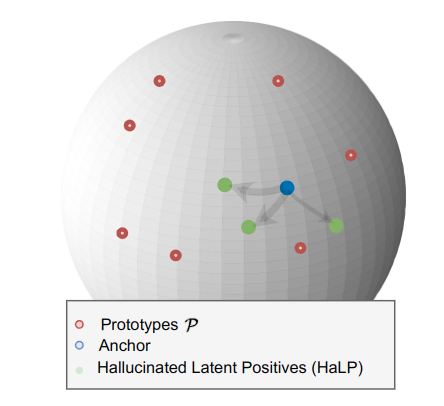 |
HaLP: Hallucinating Latent Positives for Skeleton-based Self-Supervised Learning of Actions
CVPR 2023
New contrastive learning method by generating positives in latent space for self-supervised skeleton-based action recognition.
Anshul Shah,
Ketul Shah*,
Aniket Roy*,
Shlok Kumar Mishra,
David Jacobs,
Anoop Cherian,
Rama Chellappa.
|
| 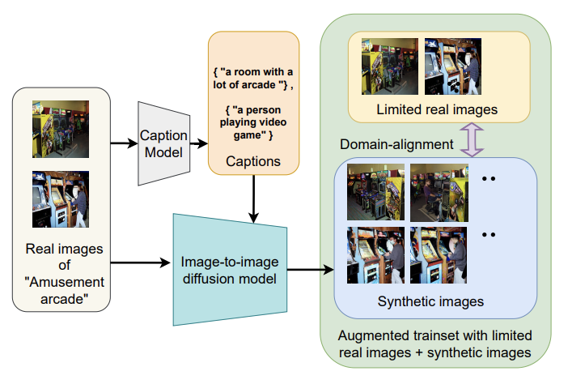 |
Cap2Aug: Caption guided Image to Image data Augmentation
arXiv 2023
Generate diverse augmentations using image-to-image diffusion models via captioning.
|
| 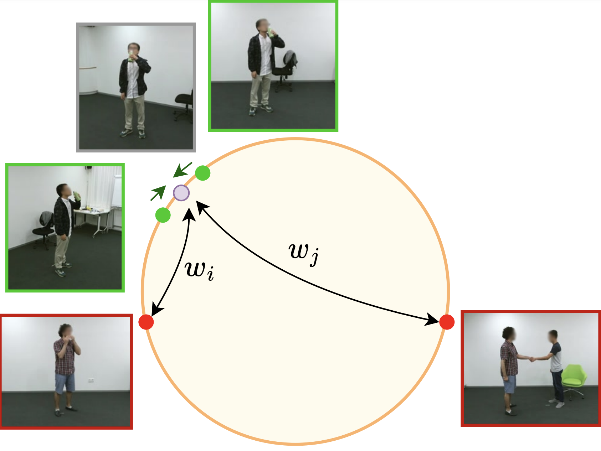 |
Multi-View Action Recognition using Contrastive Learning
WACV 2023
Improved hardness-aware supervised contrastive learning objective for multi-view action recognition.
|
| 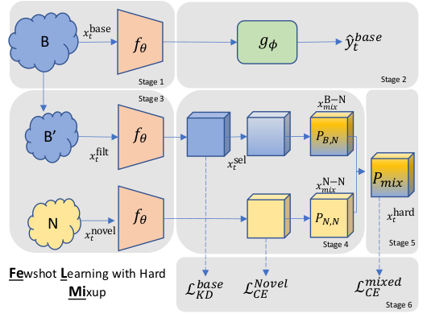 |
FeLMi : Few shot Learning with hard Mixup
NeurIPS 2022
Generate samples using manifold mixup and select hard samples based on uncertainty.
|
| 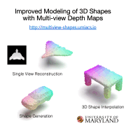 |
Improved modeling of 3D shapes with multi-view depth maps
3DV 2020 (Oral Presentation)
A novel encoder-decoder generative model for 3D shapes using multi-view depth maps; SOTA results on single view reconstruction and generation.
|
| 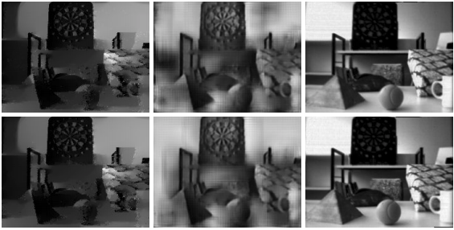 |
Photorealistic Image Reconstruction from Hybrid Intensity and Event based Sensor
arXiv 2018
Novel method for generating high-frame rate video from a conventional camera and an event sensor.
Warp the intensity frames by first estimating scene depth and ego-motion.
|